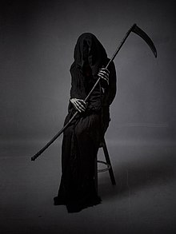
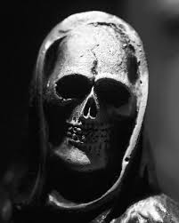
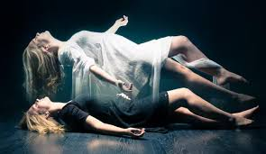

La muerte


Así como las muestran en las películas y los libros, así la he visto en mis sueños. Hoy, 25 de octubre de 2024, voy a tener otro sueño
con la muerte.
En mis sueños, la muerte es alta, como de 2 metros, vestida de negro y sin rostro. La primera vez que soñé con ella, en el
sueño estaba en la playa. Yo miraba la playa frente a mí y de la nada, las personas salieron corriendo. Yo no sabía qué pasaba,
así que me quedé allí parado mirando la playa. Después de un momento, vuelvo a mirar alrededor y no había nadie.
Cuando vuelvo a mirar al frente, veo que la muerte viene caminando sobre el agua y, con cada paso que da, se pone más grande.
No podía moverme. De la nada, aparece alguien a mi lado y me dice que "ya está aquí". De repente, despierto.
En el transcurso de ese día, como al mediodía, alguien me dice que se murió un adolescente que vivía por el sector. Yo no era
amigo de él, pero lo saludaba a veces. Cuando me dijeron su nombre, automáticamente recordé el sueño y recordé que él fue
quien apareció a mi lado cuando la muerte venía hacia mí y dijo "Ya está aquí".
y fue como uuuff que raro soñe con el y la muerte y ahora despierto y me dice que el esta muerto 💀
Sueños
Desde hace aproximadamente 2 años e tenido sueños sobre la muerte , y cuando despierto en el dia muere alguien , aveces es la persona
con la que soñe y otras veces es una persona relacionada ejemplo:
La primera vez que soñe y fue muy raro soñe con una amigo un poco lejano eramos mas cercano de niños
su nombre es jorge soñe que moria ,
al despertar ese dia mama me dice que murio jorge pero no era jorge mi amigo era otro jorge que vivia a unas cuadras de la casa no hablaba con el pero aveces lo saludaba
cuando mama me dice asi recorde el sueño y fue ¿como? raro me entiendes quede algo pensativo por la casualida del sueño
pero no me puse a persar en eso....

Tiempo después, tuve un sueño donde una tía política (esposa de un tío) moría ese día. Cuando desperté, mi madre me llama y
me dice que murió una tía, no era la misma con la que soñé, pero sí era una tía política. Allí ya me puse un poco más pensativo
sobre los sueños. Recordé mi primer sueño donde moría Jorge y me pregunté por qué sueño que muere alguien y al despertar muere alguien relacionado
a los que soñé. Me sentía muy raro, era como un 'Déjà vu' muy personal, se sentía como si dos planetas se chocaran, era una sensación muy extraña.

despue de eso paso algo muy triste empeze a soñar que mama moria el primer sueño mama estaba en un lugar muy hermoso era un lugar muy tranquilo
y brillante mama estaba llorando muy triste y la tia politica que murio estaba con ella en ese lugar hermoso mi tia le estaba dando como
consuelo , ya que mama estaba en un lugar muy hermoso pero estaba muy triste....
ese dia cuando desperte ya estaba un poco asustado por los sueños que habia tenido anteriormente entoce desperte y fui al cuarto de mama ella estaba viendo television
y tuve un alivio por que pense que podria pasar algo malo por el sueño que habia tenido....
muy poco tiempo despue tuve otro sueño donde mama moria me levante y me dio un poco de rabia dije por que mierda estoy teniedo esto malditos sueños
ese era un dia martes , me despierto me cambio para ir a la escuela ya mama se habia ido al trabajo , mama trabaja en barranquilla , nosotros viviamos en soledad , atlantico
ese dia cuando estoy en la escuela mama me llama y me dice que esta en casa de mi abuela (la mama de mi mama) me dice que se sintio mal y despue del trabajo se fue para donde la mama que estaba muy cerca
cuando me dice eso me asuste y recorde los 2 sueños donde mama moria ..
Escuche por ahi!
Dicen que si tienes sueños donde muere alguien se lo cuentes a familiares o amigos para que no pase , entoces despues de la llamada de mama
le dice a algunos compañero de la escuela sobre todos los sueños que habia tenido hasta ese momento ...
con la intesion de que no le pasara a mama
Mama
despue de eso mama se puso enferma la tuvimos que llevar al hospital y se tuvo que quedar alla luego de 2 semana la llevaro a otra clinica
fue como 💀 mama estaba mal y yo seguia teniendo sueño donde ella moria un dia estado con mama en la clinica ella estaba durmiendo y se levanto
de la nada y dijo que estaba tenido sueño donde ella moria y fue horrible yo tenia sueño donde ella moria y ahora mama tambien tenia sueño donde ella moria
unos de los sueño que mama tuvo y me lo conto fue que una persona le dijo "tu tevas a morrir a donde en que cemeterio quieres ir a donde fue enterado
tu papa -el papa de mi mama -- mi abulo o en el otro cemeterio que estaba enterada una tia "
cuando mama me cuenta el sueño fue horrible un sueño asi tan feo
finalmente mama murio el 23 de diciembre 2024 de una enfermeda de la sangre yo fui el ultimo que vio a mama con vida su muy triste , muy
doloroso por mama empezo a debilitarse con el tiempo
despue de su muerte empeze a tener sueños con mama despue de ya habia muerto tenia sueño un bonito donde mama estaba en un lugar muy tranquilo
llego de vida y paz unos de los sueños que tuve mama estaba con mi tia politica desde alli me pregunto
¿ tendremos los dias contados ? y que ahi despue de esto solo espero que mama este bien donde sea que este y ya no siendo dolor ❤️🥲😭